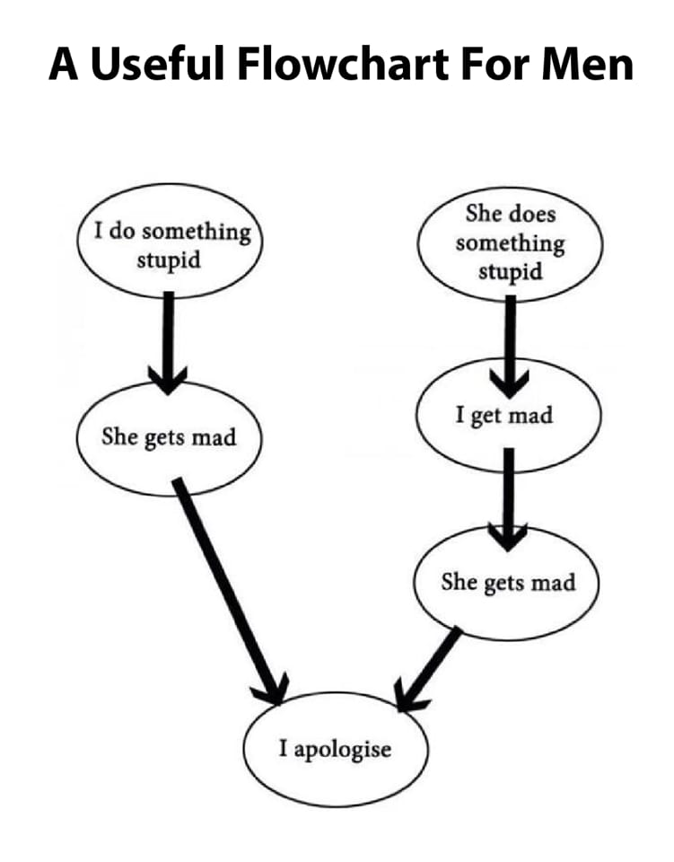

Algoritma 🛠
What is an Algorithm?
Algoritma adalah serangkaian instruksi yang dirancang untuk menyelesaikan suatu tugas atau memecahkan masalah dengan cara yang sistematis. Dalam dunia teknologi, algoritma sangat penting karena memungkinkan komputer (atau bahkan manusia) mengikuti langkah-langkah yang jelas untuk mencapai hasil yang diinginkan.
Bayangkan algoritma seperti resep masakan. Untuk membuat nasi goreng, kita perlu mengikuti langkah-langkah tertentu: menyiapkan bahan, menumis bumbu, memasukkan nasi, dan mengaduknya hingga matang. Jika urutannya salah, bisa jadi rasa nasi gorengnya tidak enak atau bahkan gagal dimasak. Begitu pula dengan algoritma—jika langkah-langkahnya tidak disusun dengan baik, hasil akhirnya bisa kacau.
Contoh Algoritma dalam Kehidupan Sehari-hari di Indonesia 🇮🇩
Transportasi 🚗
Aplikasi seperti Google Maps dan Waze menggunakan algoritma untuk mencari rute tercepat, menghindari macet di Jakarta atau kota besar lainnya.
Perbankan 💳
Bank memanfaatkan algoritma untuk mendeteksi transaksi mencurigakan, misalnya jika tiba-tiba ada transaksi dalam jumlah besar dari luar negeri.
E-commerce 🛒
Situs belanja online seperti Tokopedia dan Shopee menggunakan algoritma untuk merekomendasikan produk berdasarkan riwayat pencarian dan pembelian kita.
Keunggulan Algoritma
✅ Efisien
Mengotomatisasi tugas berulang sehingga menghemat waktu dan tenaga.
✅ Konsisten
Jika input yang diberikan sama, hasilnya akan selalu sama.
✅ Bisa menangani data besar
Algoritma memungkinkan sistem bekerja dengan jutaan data tanpa kebingungan.
✅ Menyelesaikan masalah lebih mudah
Dengan memecah masalah menjadi langkah-langkah kecil, solusi bisa ditemukan lebih cepat.
Algoritma vs. Cara Manual (Tanpa Algoritma)
| Situasi | Algoritma | Tanpa Algoritma |
|---|---|---|
| Mencari jalan tercepat ke suatu tempat | menggunakan google maps yang bisa menghitung rute tercepat (algoritma djikstrak) | tanya orang satu per satu dijalan |
| memasak nasi goreng | mengikuti langkah langkah dari resep dengan urut | memasukan semua bahan secara acak dan berharap berhasil |
| belajar sesuatu | mulai mencari belajar dari hal dasar lalu jika sudah bisa lanjut ke hal yang lebih rumit secara bertahap | belajar yang penting belajar dan berusaha menelan semua informasi yang ada tanpa paham dasarnya |
Fakta Menarik 🎉
Tahukah kamu? Kata "algoritma" berasal dari nama ilmuwan Persia, Al-Khwarizmi, yang menciptakan dasar-dasar aljabar. Dari namanya, kita mendapatkan istilah "algorithm" yang kita kenal sekarang!

Menariknya, konsep berpikir algoritmik juga terlihat dalam budaya Indonesia. Misalnya, dalam proses pembuatan batik, setiap motif dibuat dengan urutan tertentu yang mengikuti pola sistematis—mirip dengan cara kerja algoritma dalam dunia teknologi!
Mau Belajar Lebih Dalam? 🎥
Jika kamu penasaran bagaimana algoritma mengubah dunia teknologi dan kehidupan sehari-hari, yuk cek video menarik berikut ini!